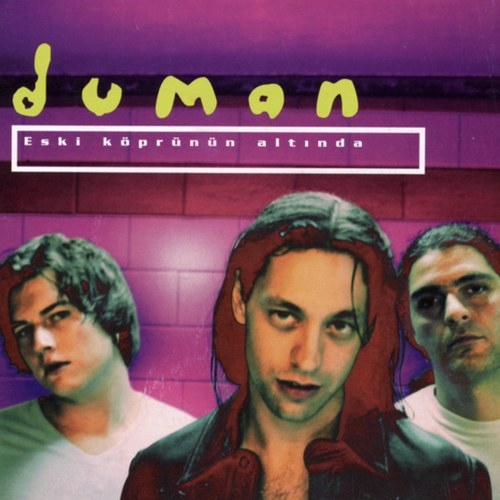

Sizdən çox xoşum gəldi.
Sizi narahat etdimsə və ya sevgiliniz varsa, üzrlü sayın. Sadəcə fərqli bir “salam” vermək istədim.
Siz də istəsəniz, tanış olaq. Cavab vermək məcburiyyətiniz yoxdur. ♡

Sizi narahat etdimsə və ya sevgiliniz varsa, üzrlü sayın. Sadəcə fərqli bir “salam” vermək istədim.
Siz də istəsəniz, tanış olaq. Cavab vermək məcburiyyətiniz yoxdur. ♡